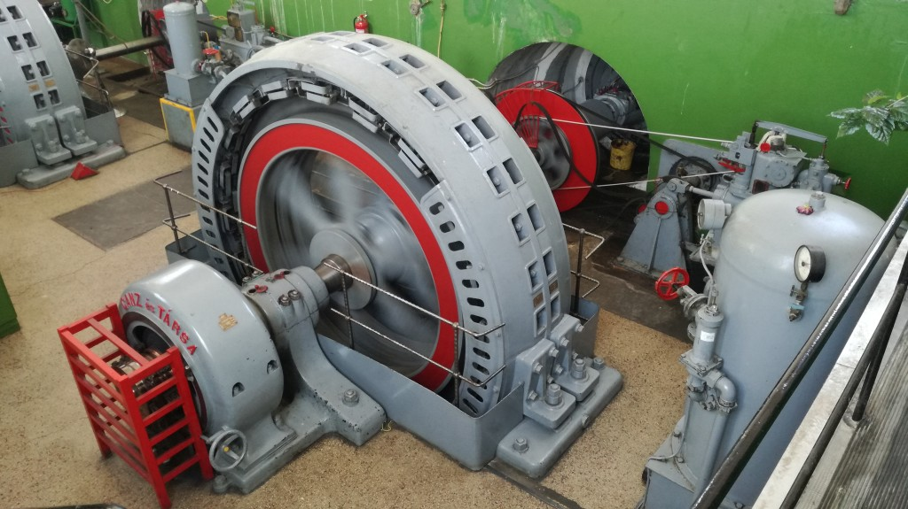
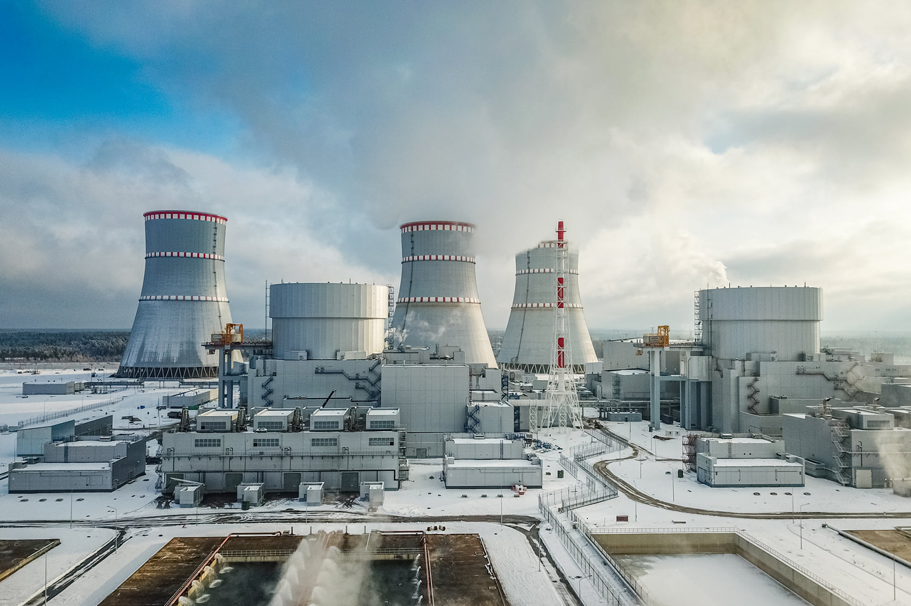
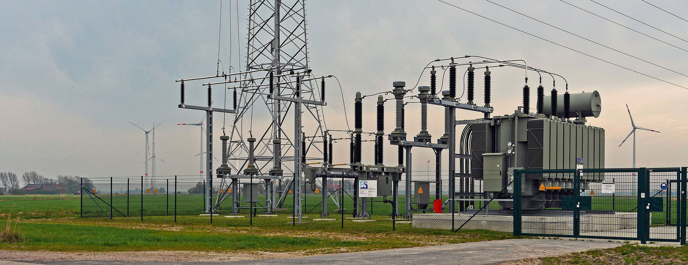

Kezdőlap

Ez a weboldal a WEB-es technologiák tárgy beadandójára készült, és tartalmazza az elmúlt félévekből a kedvenc témaköreimet.
Villamosgépek és hajtások
- Bevezetés a villamos gépek világába. A villamos gépek csoportosítása, helyük és szerepük a villamosenergia-rendszerben.
- Transzformátorok felépítése és működési elvük. Egyfázisú transzformátorok helyettesítő kapcsolása.
- Háromfázisú transzformátorok, kapcsolási típusai, üzemállapotai.
- Aszinkron gépek felépítése és működése. Mechanikai jelleggörbéje.
- Szinkron gépek felépítése, működése, mechanikai jelleggörbéje, szinkronozás.
- Egyenáramú gépek felépítése és működése. Mechanikai jelleggörbék.
- Villamos hajtások kinematikája. Nyomaték és tömeg átszámítása közös tengelyre.
Villamosenergia ellátás
- Villamosenergia-előállítása, energiahordozók, erőművek.
- Villamosenergia-átvitel jellemzői, szabványos rendszerei. Elosztói hálózatok.
- Hálózati impedanciák. A hálózatok egyszerű helyettesítő vázlatai. Közös feszültségalapra redukálás.
- Szinkrongenerátorok az energiarendszerben. Szinkrongépek zárlati viszonyai. 1. Zárthelyi.
- Hálózatok hibaállapotai. Hálózati elemek egyfázisú helyettesítő vázlatai.
- Aszimmetrikus hibák számítása a szimmetrikus összetevők alkalmazásával. Hálózati elemek sorrendi impedanciája.
- Hagyományos és megújuló energiaforrás a szünetmentes villamosenergia- ellátásban.
Villamos védelmek és automatikák
- Beveztés a villamosvédelmek világába
- Elektromechanikus védelmek
- Túláramvédelmek
- Különbözeti védelmek
- Impedancia védelmek
- Távolsági védelmek
- Digitális védelmek